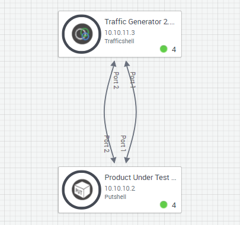

This blueprint runs a load test on a product under test (PUT) using a traffic generator resource.
Note: The product to be tested must contain a compatible port. Up to 4 devices can be load tested at once.

Setup: During the reservation's Setup phase, this command automatically powers on the blueprint's resources and connectivity. The status of the blueprint’s elements is displayed in the Output pane.
Run Load Test: Initiates the load test by running the Start Traffic command on the traffic generator and then the Health Check command on the PUT. The result of the command execution is displayed in the Output pane.
Teardown: During the reservation's Teardown phase, this command automatically tears down the blueprint and powers off the blueprint’s resources. The status of the blueprint’s elements is displayed in the Output pane.
Start Traffic command: Generates and transmits 11 packets to the product under test using the PUT's username and password for authentication, then runs a load test on the PUT. The progress and results of the test are displayed in the Output pane.
Health Check command: Runs a health check on the resource and displays the status of the check in the Output pane.
Reserve the blueprint.
Open the blueprint's Commands pane.
Click Run Tests.
Open the Output pane to see the test results.
End the sandbox if you finished using it ahead of time.
The resources are powered off and freed up for other users.